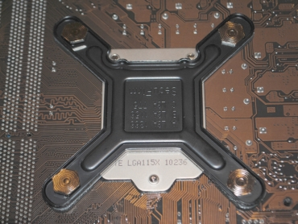
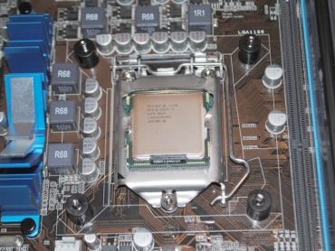
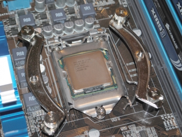
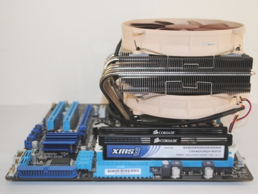
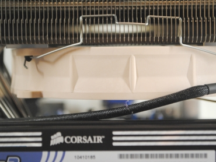
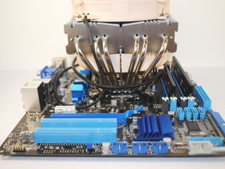
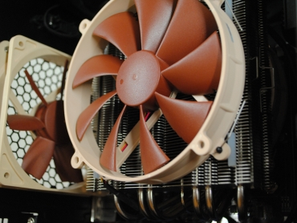
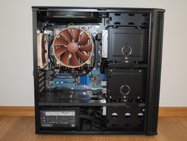
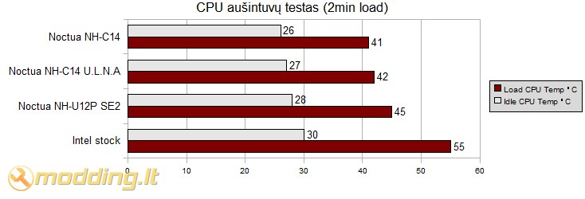
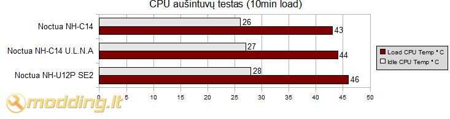

Noctua NH-C14 aušintuvo apžvalga
 Lapkričio paskutinę savaitę kompanija Noctua anonsavo NH-C14 aušintuvą. Jis, priešingai nei daugelis kitų Noctua aušintuvų, oro srautą pučia į CPU, o ne į galinę ar viršutinę korpuso sienelę. Toks sprendimas patiks ne visiems, tačiau ši aušintuvo konstrukcija turi savo privalumų, apie kuriuos pasistengsiu papasakoti NH-C14 aušintuvo apžvalgoje.
Lapkričio paskutinę savaitę kompanija Noctua anonsavo NH-C14 aušintuvą. Jis, priešingai nei daugelis kitų Noctua aušintuvų, oro srautą pučia į CPU, o ne į galinę ar viršutinę korpuso sienelę. Toks sprendimas patiks ne visiems, tačiau ši aušintuvo konstrukcija turi savo privalumų, apie kuriuos pasistengsiu papasakoti NH-C14 aušintuvo apžvalgoje.
Žvilgsnis iš arčiau
Noctua NH-C14 aušintuvas supakuotas į dėžę, kurią paėmęs į rankas pamaniau "čia bus kažkas rimto". Radiatorius su dviem ventiliatoriais sveria 1 kg, todėl nenuostabu, kad iš tokio svorio gaminio tikimasi gerų aušinimo rezultatų. Aušintuvo komplektacijoje rasime visus reikalingiausius priedus: geromis savybėmis pasižyminčią NT-H1 termopastą, du 140mm NF-P14 FLX ventiliatorius, atsuktuvą bei tvirtinimui reikiamas dalis. Kaip ir daugelyje kitų Noctua aušintuvų komplektacijose, šis aušintuvas komplektuojamas su apsukas mažinančiai adapteriais L.N.A ir U.L.N.A.
Pakuotės viduje randame:
- radiatorių ir 2 vnt. NF-P14 FLX ventiliatorių
- SecuFirm2™ Mounting tvirtinimo detales AMD ir Intel platformoms
- termopastą NT-H1
- manual - vartotojo knygeles
- 4 vnt. jungimo adapterių: 2 vnt. Low Noise Adaptor (L.N.A) bei 2 vnt. Ultra Low Noise Adaptor (U.L.N.A)
- 1 vnt. adapteris dviems ventiliatoriams pajungti į vieną CPU Fan kištuką
- atsuktuvą
- 4 vnt. varžtų
- 4 vnt. guminių tvirtinimo elementų
- ventiliatorių tvirtinimo rėmelius
- Noctua logotipą-lipduką
NH-C14 tvirtinimui Intel socket naudojama papildoma back plate detalė, todėl norint sumontuoti šį aušintuvą, jums teks išimti motininę plokštę. Tiems, kieno korpuse yra back plate keitimo anga, motininės plokštės išimti iš korpuso nereiks. Foto, pateiktoje kairėje pusėje, matote Intel platformai skirtus montavimo elementus, dešinėje - AMD platformai skirtus elementus.
Noctua NH-C14 aušintuvo komplektacijoje rasime 4 vienetus metalinių varžtų, bei keturis vienetus guminių tvirtinimo elementų - jie skirti ventiliatoriaus montavimui korpuse. Kadangi komplekte du 140mm NF-P14 FLX - didelė tikimybė, kad procesoriaus aušinimui pilnai pakaks vieno iš jų, o kitą galėsite sumontuoti savo korpuso galinėje ar viršutinėje sienelėje. NF-P14 ventiliatorius gali būti sumontuotas į 120mm arba 140mm angas. Montuojant jį į 140mm ventiliatoriaus poziciją bus panaudoti metaliniai adapteriai, kurie turi patobulinimą - gumines tarpines. Šios tarpinės turėtų sumažinti į korpusą perduodamas vibracijas.
Ventiliatorių specifikacijos
- Modelis: 2 vnt. Noctua NF-P14 FLX
- Dydis: 140x140x25 mm
- Guolis: SSO-Bearing
- Ventiliatoriaus apsisukimai: 1200 rpm (+/- 10%)
- Oro srautas: 110 m³/h
- Triukšmo lygis: 19,6 dBA
- Ventiliatoriaus apsisukimai naudojant L.N.A: 900 rpm (+/- 10%)
- Oro srautas: 83,7 m³/h
- Triukšmo lygis: 13,2 dBA
- Ventiliatoriaus apsisukimai naudojant U.L.N.A: 750 rpm (+/- 10%)
- Oro srautas: 71,2 m³/h
- Triukšmo lygis: 10,1 dBA
- Įtampa: 12V
- Galia: 1,2W
- Ilgaamžiškumas: >150,000 val.
- Jungtis: 3pin
Aušintuvo specifikacijos
- Suderinamumas: socket LGA775, LGA1366, LGA1156, LGA1155, AM2, AM2+, AM3 (su backplate)
- Radiatoriaus išmatavimai (be viršutinio ventiliatoriaus): 140 (ilgis) x 166 (plotis) x 105 (aukštis) mm
- Bendri išmatavimai (su dviem ventiliatoriais): 140 (ilgis) x 166 (plotis) x 130 (aukštis) mm
- Medžiagos: varis/aliuminis
- Svoris: radiatoriaus - 700 g; su vienu ventiliatoriumi - 850 g; su dviem ventiliatoriais - 1000 g
Noctua NH-C14 aušintuvo konstrukcijai panaudoti 6 heatpipe vamzdeliai, kurie su CPU neturi tiesioginio kontakto, o yra įspausti tarp dviejų plokštelių. Heatpipe vamzdeliai pereina per aliuminines plokšteles, prie kurių viršaus ir apačios montuojami ventiliatoriai. Vamzdeliai išdėstyti arčiau plokštelių kraštų - taip yra dėl ventiliatoriaus oro srauto padėties. Per radiatoriaus vidurį yra įrengtas standumo rėmas, kuris sustiprina visą aušintuvo konstrukciją. Radiatoriaus padas, kuriuo jis prispaudžiamas prie CPU, nėra šlifuotas iki veidrodinio spindesio, tačiau turi specifinį apdorojimą, kuris turi orentuotą kryptį. Panaudojus termopastą šis paviršius itin gerai sulimpa su CPU paviršiumi, todėl norint atskirti juos vienas nuo kito patarčiau naudoti sukamąjį judesį ir jokiu būdu neskubėti.
Aušintuvo montavimo ant CPU metu tenka prisukti du varžtus, kurie yra po radiatoriumi. Šiam darbui atlikti yra įrengtos dvi ertmės radiatoriuje, todėl nereikai nuimti ventiliatorių, tereikia rasti jų menčių poziciją, kad atsuktuvas netrugdomas galėtų pasiekti varžtus. Norėdama sumažinti ventiliatoriaus skleidžiamas vibracijas, Noctua savo radiatoriams naudoja gumines tarpines, kurios dedamas tarp ventiliatoriaus ir radiatoriaus. Tokiu būdu ventiliatorius guli ne ant metalo, o ant guminės tarpinės, todėl jo propelerio darbo sukeliamos vibracijos yra slopinamos ir mažiau perduodamos į tolimesnę aušintuvo dalį.
Naujasis Noctua NH-C14 aušintuvas komlektuojamas kartu su dviem NF-P14 140 mm ventiliatoriais, kurių apsukos 1200 rpm, sukuriant 110 m³/h ir 19,6 dBA triukšmo lygį. Komplekte yra apsukas mažinantys adapteriai, L.N.A ir U.L.N.A, kurie gali sumažinti apsukas ir skleidžiamo triukšmo lygį iki 900rpm (13,2 dBA) ir 750 rpm (10,1 dBA). Dėja, tačiau negaliu tiksliai išmatuoti skleidžiamo triukšmo lygį, bet galiu pasakyti, jog naudojant U.L.N.A ventiliatoriai veikia itin tyliai.
NH-C14 radiatorius išdėstytas lygegrečiai CPU paviršiui, todėl yra kompaktiškesnis: naudojant Low Profile Mode aušintuvas naudojamas su vienu NF-P14 140mm ventiliatoriumi, kuris montuojamas už radiatoriaus, arčiau CPU. Tokiu atvėju aušintuvo aukštis vos 105 mm. Naudojant NH-C14 su dviem ventiliatoriais, jo aukštis bus 130 mm. Lyginant su kitais Noctua gaminiais, NH-C14 - žemiausią profilį turintis gaminys. Net ir naudojamas su dviem ventiliatoriais, NH-C14 bus 28 mm žemesnis nei NH-U12P ir 30 mm žemesnis nei NH-D14. Naudojant su vienu ventiliatoriumi - 20 mm žemesnis nei NH-U9B SE2, kurio aukštis 125 mm.
Ventiliatoriai prie radiatorių tvirtinami metaliniais rėmeliais, kurių montavimas tapo patogesnis, dėl patobulintos rėmelių formos: metaliniai rėmeliai turi auseles, kurios palengvina ventiliatoriaus montavimą ant radiatoriaus. Senesni Noctua aušintuvų modeliai (pvz. NH-U12P SE2 ) tokių rėmelių neturi, jų forma paprastesnė, todėl montavimas būdavo ne itin patogus.
Dar vienas geras dalykas, kuris įdiegtas NH-C14 aušintuvo konstrukcijoje, yra specialios įdėtinės detalės (juodi kištukai ventiliatoriaus auselėse). Jie taipogi suteikia naudos, kadangi nuėmus ventiliatorių nuo radiatoriaus nepametami rėmeliai - jie lieka pritvirtinti prie ventiliatoriaus.
Tvirtinimas
Noctua NH-C14 aušintuvas komplektuojamas su SecuFirm2™ Mounting tvirtinimo rinkiniu. Mano manymu ši sistema ir tvirtinimo būdas - vienas patogiausių. Kadangi man yra tekę montuoti daug įvairių gamintojų CPU aušintuvų, Noctua aušintuvams taikomas montavimo būdas man labiausiai patinka tuo, jog nereikai didelių fizinių pastangų montuojant. Visa tvirtinimo sistema susideda iš kelių mažų elementų, kuriuos nesudėtinga sujungti į sistemą, o pabaigoje tereikia prisukti du varžtus. Toks montavimas patogesnis ir mažesnė rizika sugadinti PC komponentus, lyginant su Scythe ar Zalman naudojamais tvirtinimo būdais, kuomet reikia vienu metu atlikti spaudimo ir fiksavimo veiksmus.
Iki šios apžvalgos naudodavau AMD platformą. Montavimas buvo nesudėtingas, jo procesą esu parodęs NH-U12P SE2 apžvalgoje. Šiuo metu ėmiau naudoti Intel 1156 socket, todėl trumpai papasakosiu montavimo procesą: visų pirma sumontuojame X formos back plate sustandinimą ant galinės motininės plokštės sienelės, po to - sudedame varžtus bei plastmasines tarpines. Ant viršaus dedame metalinius rėmelius, juos prisukame. Ant CPU paviršiaus užtepame vandens lašo dydžio (galite naudoti ir kitokį kiekį) termopastos kiekį bei prisukame aušintuvą uždėję jį ant CPU. Pajungiame ventiliatoriaus maitinimo laidus prie motininėje plokštėje esančio CPU_FAN lizdo. Sumontuojame motininę plokštę atgal į korpusą ir galime spausti Power ON mygtuką.








Noctua NH-C14 aušintuvas yra didelių gabaritų, todėl dalinai užstoja pirmąjį ir antrąjį DDR RAM lizdus. Tai nėra problema, jei naudojami neaukštus radiatorius turintys RAM moduliai, tačiau gali kilti nesklandumų montuojant tokius RAM modulius kaip Corsair Dominator, kurių radiatoriai yra aukštesni nei standartinių, ar RAM modulius su heatpipe aušinimu (pvz. OCZ Reaper HPC). Tokiu atvėju išeitis - atsisakyti apatinio ventiliatoriaus.
Kalbant apie tokios konstrukcijos aušintuvo pliusus reiktų paminėti tai, jog oro srautas gerai aušina ne tik CPU, bet ir RAM, Northbridge ir Southbridge todėl pravartu rinktis tokį CPU aušintuvą, jei jūsų korpuse įregti itin kaistantys elementai.
Rezultatai
Testavimo sistema:
- CPU Cooler - Noctua NH-C14
- Case - Antec Mini P180
- Mainboard - Asus P7H55D-M Pro S1156 DDR3 HDMI UATX
- CPU - Intel Core i3-540 3.06Ghz 4M LGA1156 73W
- RAM - Corsair DDR3 2X2GB 1600MHZ CL8 CMX4GX3M2A1600C8
- HDD - SEA BARRACUDA 160GB 7200rpm
- PSU - Cooler Master Silent Pro M700
- Case Fans - Noctua NF-S12B FLX 120mm (U.L.N.A 600rpm, 49.2 m³/h, 0.34 mm H2O), Antec 200mm TriCool (400rpm, 39 CFM)
Procesoriaus (CPU) temperatūra testuojama Idle ir Load rėžimais. Load rėžimui naudojama Orthos programa. Temperatūros rodmenys stebėti SpeedFan 4.39 bei PC Probe II V1.04.74 programomis. Testuojant buvo išmėginti U.L.N.A bei paprastas pajungimo rėžimas. Testavimams naudotas Antec Mini P180 korpusas galinėje sienelėje turi Noctua NF-S12B FLX 120 mm orą ištraukiantį aušintuvą (600rpm, 49.2 m³/h, 0.34 mm H2O), o taip pat viršuje esantį, orą ištraukiantį, Antec 200 mm TriCool ventiliatorių (400 rpm, 39 CFM).
Visų pirma testuojama CPU idle rėžime - procesorius neapkrautas dirba 30min. Vėliau įjungiama Orthos programa, kuri apkrauna abu CPU branduolius. Stebimos temperatūros:

Kaip matote, Intel stock aušintuvas jau po 2min load rėžime pasiekė 55 ⁰C, todėl toliau jis iš teste nedalyvaus, kadangi nenorima sugadinti PC komponentų. Testas tęsiamas stebint NH-C14 bei NH-U12P SE2 aušintuvų rezultatus:

Noctua NH-C14 aušintuvo efektyvumas puikus: lyginant su Intel stock aušintuvu, jau po 2min load rėžime NH-C14 aušina net 14 ⁰C geriau. Lyginant su NH-U12P SE2 aušintuvu, NH-C14 pranašesnis 4 ⁰C po 2min apkrovos. Tęsdamas testus toliau procesorių kaitinau Orthos programa bei fiksavau temperatūras. Po 10min apkrovos Intel Core i3-540 3.06Ghz 73W procesoriaus, aušinamo NH-C14 aušintuvu, temperatūra pasiekė 43 ⁰C, tuo tarpu NH-U12P SE2 aušintuvo rezultatas - 46 ⁰C. Panaudojus ventiliatoriaus apsukas mažinančius adapterius U.L.N.A efektyvumas pablogėja tik vienu laipsniu, o triukšmo lygis juntamai sumažėja, kadangi apsukos sumažinamos nuo 1200rpm iki 750rpm.
Išvados
Pliusai:
- efektyvus aušinimas
- 105mm aukštis naudojant vieną ventiliatorių
- montavimui nereikia nuimti ventiliatorių
- 2 vnt. NF-P14 FLX ventiliatorių komplekte
- kokybiškai surinktas
- yra apsukas mažinantys adapteriai U.L.N.A ir L.N.A
- tylus veikimas
- komplekte pridedamas atsuktuvas
- patogus montavimas
- 6 metų garantija
Minusai:
- esant aukštiems RAM radiatoriams gali kilti keblumų montuojant (teks nuimti apatinį ventiliatorių)
- didelė kaina
 Noctua NH-C14 procesoriaus aušintuvas pasižymi geru aušinimo efektyvumu bei tyliu veikimu. Lyginant jį su Intel stock aušintuvu, NH-C14 rezultatai geresni net 14 ⁰C load rėžime. Lyginant su NH-U12P SE2 aušintuvu, NH-C14 rezultatai geresni 3 ⁰C. Noctua NH-C14
radiatorius išdėstytas lygegrečiai CPU paviršiui, todėl aušintuvas yra kompaktiškesnis: naudojant Low Profile Mode aušintuvo aukštis vos 105 mm, todėl NH-C14 - žemiausią profilį turintis Noctua gaminys. Net ir naudojamas su dviem ventiliatoriais, NH-C14 bus 28 mm žemesnis nei NH-U12P ir 30 mm žemesnis nei NH-D14. Naudojant su vienu ventiliatoriumi - 20 mm žemesnis nei NH-U9B SE2, kurio aukštis 125 mm. Naujasis gaminys komplektuojamas kartu su dviem NF-P14 140 mm ventiliatoriais, apsukas mažinančiais adapteriais, NT-H1 termopasta, SecuFirm2™ tvirtinimo rinkiniu - viskas ko reikia patogiam montavimui ir geram aušinimui. Kalbant apie tokios konstrukcijos aušintuvo pliusus reiktų paminėti tai, jog oro srautas aušina ne tik CPU, bet ir RAM, Northbridge ir Southbridge. Noctua NH-C14 aušintuvas yra didelių gabaritų ir gali užstoti RAM lizdus, todėl gali kilti nesklandumų montuojant atminties modulius, kurių radiatoriai yra aukštesni nei standarinių. Dar kaip minusą galima būtų paminėti kainą, ji siekia 259 Lt (EUR 74.90). Tokią kainą iš dalies atperka geri aušinimo rezultatai, du 140mm NF-P14 FLX ventiliatoriai bei net 6 metams suteikiama garantija, tačiau ne kiekvienas PC naudotojas bus pasirengęs sumokėti tokius pinigus.
Noctua NH-C14 procesoriaus aušintuvas pasižymi geru aušinimo efektyvumu bei tyliu veikimu. Lyginant jį su Intel stock aušintuvu, NH-C14 rezultatai geresni net 14 ⁰C load rėžime. Lyginant su NH-U12P SE2 aušintuvu, NH-C14 rezultatai geresni 3 ⁰C. Noctua NH-C14
radiatorius išdėstytas lygegrečiai CPU paviršiui, todėl aušintuvas yra kompaktiškesnis: naudojant Low Profile Mode aušintuvo aukštis vos 105 mm, todėl NH-C14 - žemiausią profilį turintis Noctua gaminys. Net ir naudojamas su dviem ventiliatoriais, NH-C14 bus 28 mm žemesnis nei NH-U12P ir 30 mm žemesnis nei NH-D14. Naudojant su vienu ventiliatoriumi - 20 mm žemesnis nei NH-U9B SE2, kurio aukštis 125 mm. Naujasis gaminys komplektuojamas kartu su dviem NF-P14 140 mm ventiliatoriais, apsukas mažinančiais adapteriais, NT-H1 termopasta, SecuFirm2™ tvirtinimo rinkiniu - viskas ko reikia patogiam montavimui ir geram aušinimui. Kalbant apie tokios konstrukcijos aušintuvo pliusus reiktų paminėti tai, jog oro srautas aušina ne tik CPU, bet ir RAM, Northbridge ir Southbridge. Noctua NH-C14 aušintuvas yra didelių gabaritų ir gali užstoti RAM lizdus, todėl gali kilti nesklandumų montuojant atminties modulius, kurių radiatoriai yra aukštesni nei standarinių. Dar kaip minusą galima būtų paminėti kainą, ji siekia 259 Lt (EUR 74.90). Tokią kainą iš dalies atperka geri aušinimo rezultatai, du 140mm NF-P14 FLX ventiliatoriai bei net 6 metams suteikiama garantija, tačiau ne kiekvienas PC naudotojas bus pasirengęs sumokėti tokius pinigus.
Susumavęs visus pliusus ir minusus, Noctua NH-C14 aušintuvui suteikiu 9 balus iš 10 bei modding.lt renkasi įvertinimą.
Modding.lt komanda dėkoja Jakob Dellinger iš www.noctua.at už apžvalgai suteiktą produktą.
Jei norėsite pakomentuoti mano straipsnį arba pareikšti savo nuomonę, apsilankykite Modding.lt forume.


{kind=link}
{kind=link}
{kind=link}
{kind=link}
{kind=link}
{kind=link}
{kind=link}
{kind=link}
{kind=link}
{kind=link}
{kind=link}
{kind=link}
{kind=link}
{kind=link}
{kind=link}
{kind=link}
{kind=link}
{kind=link}
{kind=link}
{kind=link}
{kind=link}
{kind=link}
{kind=link}
{kind=link}
{kind=link}
{kind=link}
{kind=link}
{kind=link}